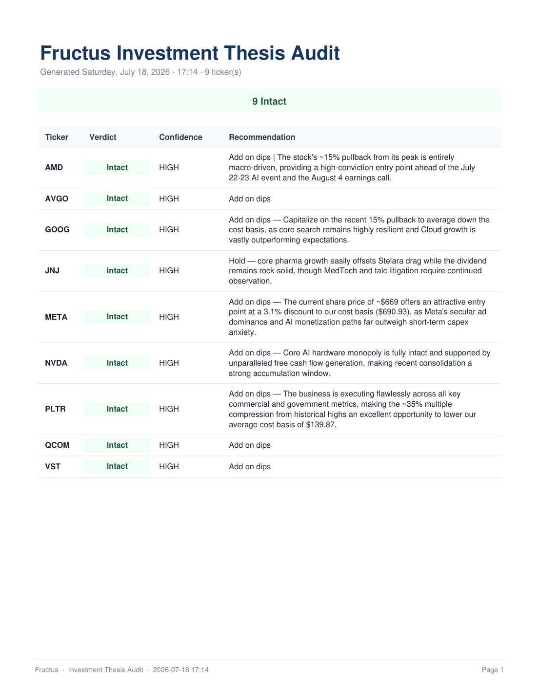
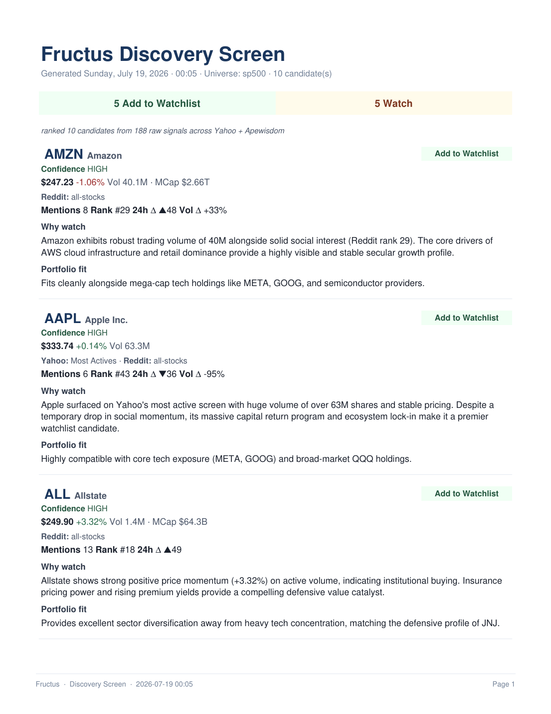
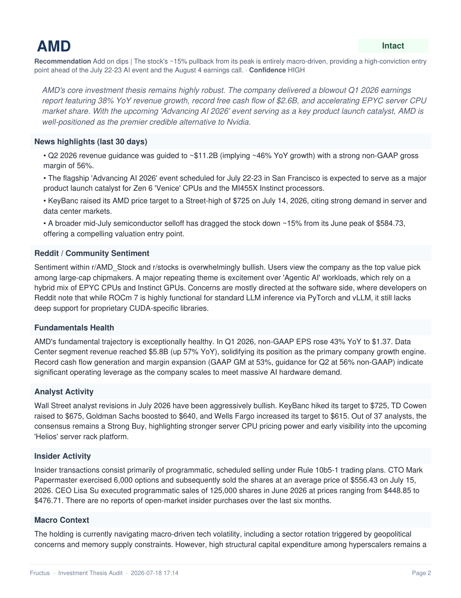

Fructus is a personal AI analyst I built for my own investment book. It pulls live positions from any brokerage, re-checks each thesis against fresh news, Reddit, analyst, and insider data, and generates a rich PDF report. This page explains what it does and how it works.
Cloud growth accelerating with the AI backlog now materially compounding. Chrome-divestiture overhang cleared with the July DOJ ruling. Q2 print on July 22 remains the next major catalyst.
Sudden retail interest in a stable regulated utility. Complements your existing VST holding by expanding utility exposure with a lower-beta, highly regulated income generator.
The problem
You bought each stock for a reason. Months later, you can't remember what that reason was — let alone whether it still holds up. Fructus re-does that research for you: news, Reddit sentiment, analyst actions, insider filings, macro context. Verdict at the top. Evidence underneath.
What it does
No dashboards to check. No decisions to hunt down. Everything below happens in a self-hosted server that speaks JSON to your CLI or your chat assistant.
E*TRADE, Schwab, Robinhood and 40+ others through SnapTrade. Positions, balances, cost basis, order history — always current, always aggregated.
Write your investment thesis once. Fructus re-checks it with grounded search across news, Reddit, analyst reports, insider filings, and macro. Verdict: Intact Challenged Broken
What's the market talking about right now? Fructus fans in Yahoo screeners and Reddit mention velocity, then ranks candidates with portfolio-fit context — so suggestions actually complement what you own.
MCP-native by design. Ask your AI assistant "how's my portfolio doing?" or "run a thesis audit on NVDA" and Fructus responds live — through Claude Code, Antigravity, or anything else that speaks MCP.
Every audit and every discovery run produces a polished multi-page PDF — verdict tallies, per-ticker breakdowns, exit-signal tables. Written straight to your Downloads folder.
Fructus runs on your VPS. Positions in your database. Credentials encrypted at rest. Files written locally — never on a shared server. No third party sees your holdings.
How it works
One-time SnapTrade link. Weeks-long tokens. Works with E*TRADE, Schwab, Robinhood, Fidelity, Interactive Brokers, and 40+ more.
One paragraph per stock. Add what to watch and specific exit signals. Or let the AI draft a first-cut you refine later.
Trigger from chat, CLI, or a cron. Get a rich PDF and per-ticker Markdown for your Obsidian vault. Skim in five minutes.
Sample output
A verdict overview on page 1. One page per ticker after that. Grounded research embedded inline. Colored exit-signal tables. Page numbers.
Click either preview to download the full multi-page PDF. Both samples are redacted, no personal holdings or dates.



Under the hood
A stateless server that only ever returns JSON. Local clients that write files. Encrypted credentials. No third-party sees your holdings.
The pipeline
Positions from SnapTrade. Quotes from Yahoo. Reddit mention velocity from Apewisdom. Fresh every request.
The intelligence
Gemini with Google Search grounding. Not a stock-picking oracle — a research assistant with citations, portfolio-fit context, and a strict rubric.
The output
Your VPS never writes to your laptop. The CLI or your AI chat agent takes the JSON and writes MD to your vault and PDF to your Downloads. Your data, your disk.
Design principle
Every AI-powered action in Fructus has a cheap preview first. You always see what would run — which tickers, which signals, which sources — before a single dollar of tokens gets spent. Discipline built into the API shape, not left as a rule to remember.
Want access
The code is a private repo for now. Happy to walk you through it, share the Postman collection, or talk about running your own copy.